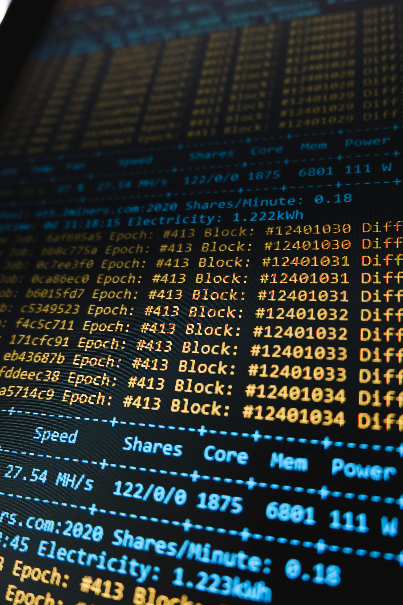

.jpg)
Information Technology
Former des ingénieurs capables de concevoir, déployer et gouverner des solutions numériques complexes. Majeures : Information Systems Strategy & Governance, Software Engineering, IT for Finance et Technologies immersives & IA.
Un parcours en cinq ans, de la prépa intégrée au diplôme d’ingénieur, mêlant fondamentaux scientifiques, choix de filière, expérience professionnelle et ouverture internationale.
À l’EFREI Paris, le cycle ingénieur associe un cycle préparatoire intégré de deux ans et un cycle d’ingénierie de trois ans. L’objectif est de fournir aux étudiants des bases solides en mathématiques, physique, électronique et informatique, tout en développant leurs compétences humaines et professionnelles. Cette articulation est reconnue par la Commission des titres d’ingénieur et par le Ministère de l’Enseignement supérieur.

À partir de la deuxième année du cycle ingénieur (I2), chaque étudiant sélectionne l’une des quatre filières. Chacune d’elles propose plusieurs majeures de spécialisation pour construire un parcours sur mesure.
Former des ingénieurs capables de concevoir, déployer et gouverner des solutions numériques complexes. Majeures : Information Systems Strategy & Governance, Software Engineering, IT for Finance et Technologies immersives & IA.
Former des experts en conception, administration et sécurisation des infrastructures numériques. Majeures : Cybersécurité, SI & Gouvernance, Cybersécurité infrastructures & logiciels et Cybersécurité & Cloud.
Analyser, structurer et valoriser les données pour répondre aux défis sociétaux et économiques. Les enseignements couvrent la statistique avancée, l’apprentissage automatique, la visualisation et la stratégie autour de la donnée.

Concevoir et intégrer des technologies au sein de systèmes complexes croisant électronique, IA et robotique. Majeures : Transports intelligents pour les mobilités de demain, et Systèmes robotiques et drones pour développer des solutions autonomes.
Le cycle ingénieur de l’EFREI met l’accent sur l’expérience professionnelle et l’ouverture au monde, véritables atouts pour l’insertion des diplômés.
Une dimension internationale est intégrée au cursus : tous les étudiants réalisent un semestre à l’étranger au cours de l’I1 ou de l’I2 (échange académique, projet humanitaire ou stage). Cette mobilité, souvent appelée SWIM (Study or Work International Mobility), est condition d’obtention du diplôme et permet d’accroître son ouverture culturelle et linguistique.
EFREI Paris dispose de plus de 80 partenariats à travers l’Europe, l’Asie, l’Amérique et l’Afrique, offrant des destinations variées (Canada, Allemagne, Espagne, Australie, Japon, etc.). L’internationalisation se poursuit via les doubles diplômes possibles en fin de cursus.
Le diplôme d’ingénieur délivré par l’EFREI est accrédité par la Commission des Titres d’Ingénieur (CTI) et reconnu par le Ministère de l’Enseignement supérieur, de la Recherche et de l’Innovation depuis 1957. L’établissement est membre de la Conférence des Grandes Écoles et labellisé EESPIG (Établissement d’Enseignement Supérieur Privé d’Intérêt Général). Il est également certifié Qualiopi et enregistré auprès de France Compétences.
Pour garantir l’excellence de la formation et la richesse des expériences proposées, l’EFREI s’appuie sur un vaste réseau d’universités et d’entreprises partenaires. Les étudiants peuvent ainsi partir en échange ou en double diplôme vers des établissements prestigieux en Europe (Université technique de Munich, Politecnico di Milano, EPFL Lausanne), en Amérique du Nord (Université de Montréal, University of California, Georgia Tech), en Asie (Université de Tokyo, Nanyang Technological University) et dans de nombreux autres pays.
Ces partenariats ouvrent la voie à des spécialisations complémentaires, des cours dispensés en anglais, des projets multiculturels et de nombreuses opportunités de carrière à l’international.
Le cycle ingénieur en informatique et numérique de l’EFREI offre un parcours équilibré entre théorie et pratique, permettant de devenir un ingénieur polyvalent, créatif et ouvert sur le monde. N’attendez plus pour construire votre avenir dans le numérique.
Candidater en cycle ingénieur